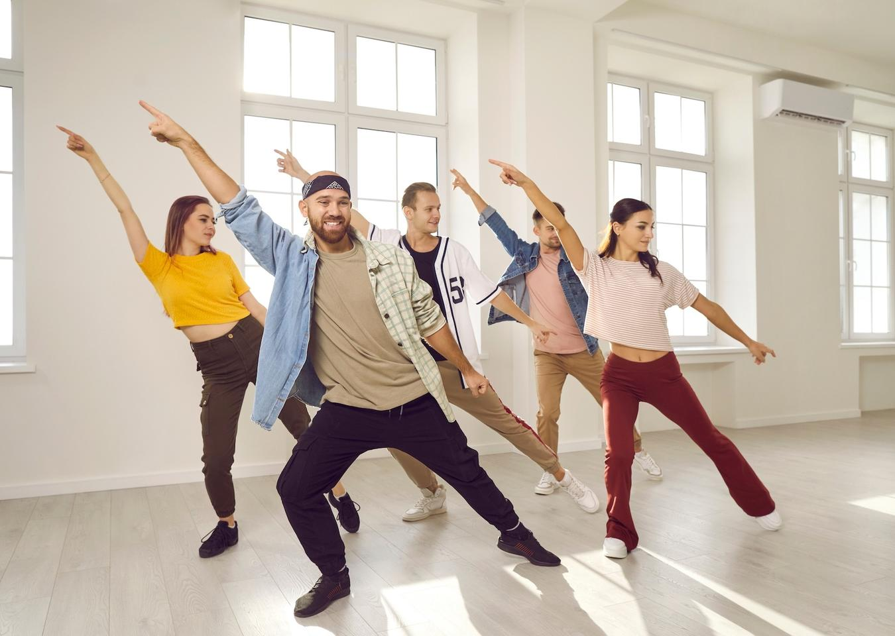

a:active {
color: yellow;
background-color: transparent;
text-decor
Ma. Isabelle H. Cabatu
Welcome to my page!
Here you will get to know things about me, like my hobbies, my studies and more.
Table of Contents
- Intro to HTML
- List, Links and Images
My Hobbies
- Dancing
- - I love dancing because i have been dancing since i was a child and it really is my favorite hobby.

- Watching
- - I like watching all kinds of things such as anime, musicals, TV shows and more!
- Baking
- - I love baking with my family as it is an activity we all enjoy.

©:2025 | Ma. Isabelle H. Cabatu | ICT 9-Emerald